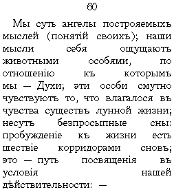
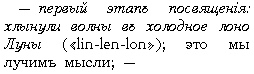
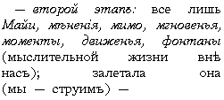
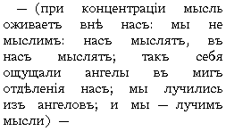
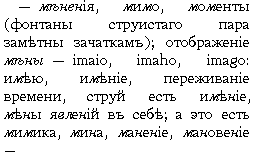
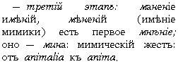
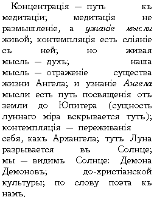
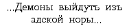
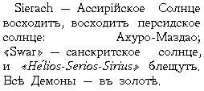

Glossolalia (Section 60)
GLOSSOLALIA

We are angels of constructed thoughts (of our own concepts); our thoughts sense ourselves as animal entities, in relation to which we are -- Spirits; these entities vaguely sense that which was implanted in the senses of beings of lunar life; they bear unawakened dreams: awakening to life is a walk through the corridors of dreams; this is -- the path of initiation into the conditions of our reality:--

-- the first stage of initiation is: waves lapped at the cold lap of Luna ("lin-len-lon"); here we radiate thoughts; --

-- the second stage is: we are all just Maias, minglings, meander by, minutes, moments, movements, fountains (of the life of thought and mind outside of us); it took flight (we -- stream off) --

-- (via concentration thought comes alive outside of us: we do not think; we are thought of, thinking is in us: in this way the angels sensed themselves at the instant of our separation; we radiated from the angels; and we -- radiate thoughts) --

-- minglings, meander, moments (fountains of streaming vapor are noticeable to the embryos); the representation of mingles -- imaio, imaho, imago: it's mine, what's mine; surviving time, the stream is mine, mingles of involvements inside oneself; and this is mimicry, mien, mangling, manipulation &emdash;

-- the third stage is: the mangling of what's mine, of minglings (having mimicry) is the first mental opinion; it is -- mien; a mimical gesture: from animalia to anima.


Concentration is -- a pathway to meditation; meditation is not wandering of thought, but the recognition of thought as alive; contemplation is a confluence with this thought; but a living thought is -- a spirit, our thought is -- a reflection of the being of life of the Angel; and recognition of the Angel of thought is the path of initiation from earth to Jupiter (the essence of the lunar world is revealed here); contemplation is -- the experiencing of oneself, like of an Archangel; here Luna explodes into the Sun; we -- view the Sun: the Demon of Demons; pre-Christian culture; in the words of the poet comes to us.
...Demons exit their hellish lair...
Shiraz -- the Assyrian Sun rises; the Persian sun rises; Ahura-Mazda; "Swar" is -- the Sanskrit sun, and "Helios-Serios-Sirius" gleam. All Demons are -- in gold.